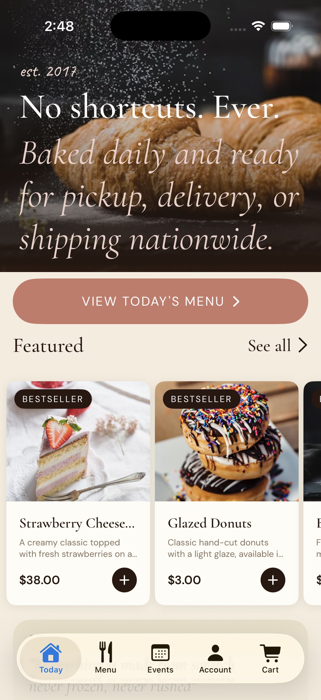
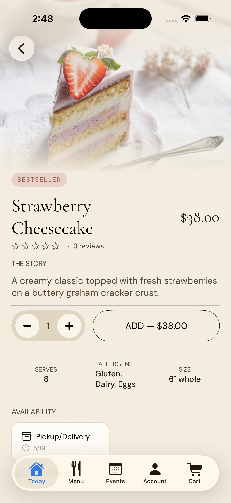
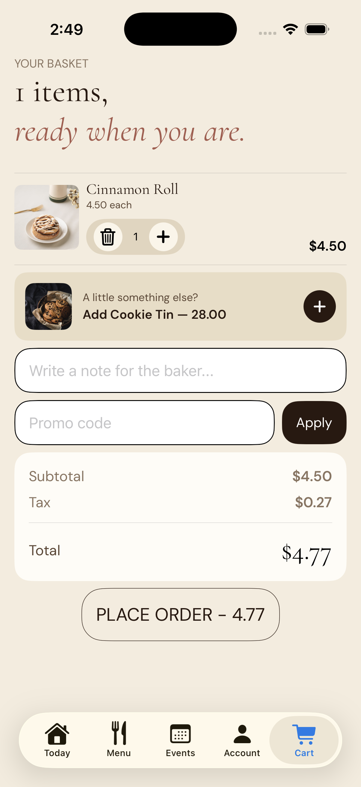

Knot
A full business operating system for small businesses. One backend, one database, every surface a business needs to run.
The Problem
Small businesses run on fragmented tools — a POS from one vendor, a website from another, employee scheduling from a third. Toast charges $200–500/month. Square charges per transaction and per feature. 7shifts charges per employee just to manage a schedule. None of them connect. None were built for the independent business owner who needs everything to work without a developer on call.
Landing Page
Scroll inside the embed to explore. Open the full site ↗ for the best experience.
You're on mobile — open the full site ↗ for the best experience.
The Platform
Knot is one Node/Express API serving every surface a business needs — customer website, customer account portal, admin dashboard, iOS customer app, iOS POS, and iOS employee app — all reading from one Supabase database. A change made anywhere propagates everywhere instantly. Menu update from the admin? The website, the customer app, and the kitchen display reflect it in real time. No redeploy. No developer required.
Deployments
Knot is multi-tenant from day one — every table carries a tenant_id, so onboarding a new business is one database row and a frontend deploy. Currently live across five verticals.
The Wellness Co. is the platform's first real client — a Michigan wellness studio that had no online presence before Knot. The remaining four are spec builds showing what the platform looks like across different business types.

Knot's first real client — a Michigan wellness studio that went from zero online presence to a fully live booking platform with Stripe payments and an owner admin dashboard.

Five-surface ordering platform — customer site, admin dashboard, iOS POS, iOS customer app, and AI ordering via MCP.

14-page marketing and booking site — custom branding, sticky header, auto-rotating reviews, FAQ accordion, and gallery.

Reservations and events platform — table booking, live events calendar, and party inquiry form.

Direct booking platform for a boutique hotel — Stripe payments, 48hr cancellation policy, and owner admin dashboard.
The Admin Dashboard
A protected single-page dashboard that gives the business owner full control over their storefront without touching code or a database. Every admin route verifies a JWT server-side — the security lives on the server, not in the browser.
- Live order and revenue overview
- Order management and fulfillment
- Revenue charts and breakdowns
- Menu CMS — items, photos, sale pricing
- Inventory tracking per item
- Coupon creation and management
- Hero image and banner CMS
- Store hours editor
- Feature toggles — ordering, subscriptions
- Gift card management
- Subscription management
- Customer list and purchase history
- Contact form submissions
- Event booking inquiries
- Employment applications
- Staff accounts and roles
- Kitchen prep list from pending orders
iOS POS
A native iPad point-of-sale that connects directly to the same Supabase backend — orders placed on the POS appear instantly in the admin dashboard and kitchen queue.

New order — staff browse the menu, add items, and build a ticket directly from the POS.

Build item — customize modifiers, sizes, and add-ons before adding to the order.

Take payment — apply discounts, split bills, and process card or cash from the POS.
Built by Jaiden Henley · Part of the Knot platform
iOS Customer App
Every Knot deployment can include a native iOS customer app — customers browse the menu, place orders, and track loyalty rewards from their phone, all connected live to the same backend as the website and admin dashboard. A change made in the admin reflects in the app instantly. No redeploy. No developer required.

Home — browse the full menu, see featured items, and start an order.

Item view — customize with modifiers and add-ons before adding to the cart.

Cart — review your order, apply loyalty rewards or coupons, and check out.
Built by Jaiden Henley · Part of the Knot platform
The Employee Layer
KnotEmployee is the staff management surface of Knot — a native iOS app that handles everything 7shifts charges per seat for. Managers get a drag-and-drop schedule builder, overtime alerts, and labor cost reporting. Staff get clock-in/out with break tracking, shift swaps, time-off requests, and direct messaging. All real-time via Supabase Realtime websockets, push notifications via a custom Deno Edge Function calling APNs directly.

The Outcome
The Wellness Co., a Michigan wellness studio, had no online presence before Knot — bookings were by phone, payments were in person, and the owner had no visibility into who was coming in or when. Today, customers book and pay online themselves. Cancellations are handled automatically by the 48-hour policy. The owner manages every appointment, payment, and customer from one dashboard. No calls. No spreadsheets.
That's what the platform replaces: the overhead, not just the software. Zero commission per order versus 15–30% on delivery platforms. Zero monthly platform fee versus $200–500/month for Toast or Square. Every new business is one database row and a frontend deploy.